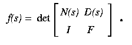

Recall that the pole placement problem may be
expressed as follows
Pole Placement Problem:
Given a linear system represented by matrices A,B,C, and a desired
behaviour f(s), which feedback laws F satisfy
f(s) = det(sIn - A - BFC)?
Rewrite the characteristic equation
f(s) = det(sIn - A - BFC):
f(s) =
det(In - BFC(sIn - A)-1)
det(sIn-A)
and apply the matrix identity
det(I - PQ) =
det(I - QP),
where P,Q are rectangular matrices.
f(s) =
det(Im - FC(sIn - A)-1B )
det(sIn-A)
The transfer function
C(sIn - A)-1B
is a p by m-matrix of rational functions determining the
response of the measured quantities y in terms of the inputs
u, when there is no feedback.
It is useful to factor this, finding matrices N(s) and D(s) of
polynomials with
N(s)D(s)-1=
C(sIn - A)-1B
where detD(s) = det(sIn - A).
This is called the coprime factorization of the transfer function.
Then we may rewrite the characteristic equation:
f(s) =
det(Im - FN(s)D(s)-1)
det D(s)
But now both matrices are m by m-matrices, so we get:
f(s) =
det(D(s) - FN(s))
Finally, we may write this as a
(m+p) by (m+p)-determinant (up to sign):

Thus if s1, s2, ..., sn are the roots
of the polynomial f, and we let Ki be the row space
of the matrix
[N(si) D(si)],
then the row space of the matrix [IF] meets each
Ki nontrivially.
From this, and a nondegeneracy result, Brockett and Byrnes
[BB] deduce that if the numbers
s1, s2, ..., smp are general there are
dm,p complex p-planes
H which meet each K(si) nontrivially, counted with
multiplicity.
By a Theorem of Eisenbud and Harris [EH],
there are no multiplicities when the
s1, s2, ..., smp are general.